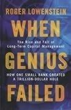

Library › Money & Finance
When Genius Failed: The Rise and Fall of Long-Term Capital Management — Summary & Key Lessons

Two Nobel laureates, a trader with the best track record on Wall Street, and $1.25 trillion in bets. Then Russia defaulted.
📖 OPEN THE FULL INTERACTIVE BREAKDOWN →🌐 Read it in Hindi, Hinglish, Gujarati, Tamil & 22 more languages — free, with audio.
💡 The Big Idea
Lowenstein narrates the complete LTCM arc: John Meriwether's Salomon bond-arbitrage team, armed with academic elegance (Merton and Scholes' options pricing framework) and historic returns (40 percent plus in 1995-96), raised billions from investors who were not even allowed to ask what the models did. The engine: convergence trades (betting that cheap and rich versions of the same risk would re-converge) leveraged 25-to-1 and larger, profitable right up until the world stopped converging. The August 1998 Russian default triggered a flight to safety that made every spread wider simultaneously; LTCM's equity fell from $4.8 billion to under $600 million while its balance sheet held $100-plus billion of positions and $1.25 trillion of derivatives. The Fed convened fourteen banks for a $3.6 billion rescue (shareholders wiped out, partners' personal stakes gone) because letting it liquidate in a fire sale threatened the global system. The enduring lessons: correlation converges to one in a crisis, leverage converts intelligence into fragility, and the crowd that copies your trade controls your exit.
🧠 The 8 Key Lessons
Lesson 1: Credentials Are Not Collateral
The Dream Team
LTCM's pitch was its roster: Meriwether (Salomon's arbitrage legend), Merton and Scholes (Nobel laureates for options pricing), Mullins (former Fed vice chairman). Investors bought brains and skipped diligence. But models priced risk from history, and history had no entry for the event that mattered. The lesson: in markets, credentials raise the cost of disagreement; they do not reduce the risk of error.
📖 Example: Blue-chip banks lent billions against a fund whose partners refused to disclose positions, because refusing was itself a signal of genius; the same banks would spend 1998 computing what that discretion had cost them. Read the full example →
⚡ Do this: In any investment or partnership, weight the operating track record through one full stress cycle over the CV. Ask what the strategy does on its worst historical day, and what day is worse than history.
Lesson 2: Convergence Trades: Tiny Spreads, Giant Leverage
Picking Up Nickels
LTCM's core trade: long the cheap instrument, short the rich one, on risks that were economically identical, earning a few basis points magnified by 25x-plus leverage into glittering returns. The model's flaw was not the pricing theory; it was financing: leveraged positions must survive the path, and paths include panics. Arbitrage without financing risk is theory; with leverage, it is timing.
📖 Example: The famous trade pairing 29.5-year and 30-year Treasuries (economically the same bond, a spread apart) widened to distances no model predicted when everyone sold what LTCM owned at once. Read the full example →
⚡ Do this: For any strategy you run, compute survival under a 3-sigma path, not just the expected value. If the path kills you before the thesis pays, the thesis is a hobby, not a strategy.
Lesson 3: The Crowd Controls Your Exit
Mirror Trades
By 1998, LTCM's trades were crowded: banks, funds and copycats held mirror positions. LTCM planned to exit into liquidity; the crowd's simultaneous exit (triggered by Salomon's bond desk liquidating a similar book) removed the exit entirely. Diversification of holdings is meaningless without diversification of co-investors. The lesson: know who else owns your positions and what would make them all sell on the same Tuesday.
📖 Example: The August cascade began with Russia's default but spread through trades LTCM did not even own, because the same banks' risk desks were cutting the same exposures everywhere at once. Read the full example →
⚡ Do this: Map your co-investors or competitors for each big position, and ask what single event would put everyone on the sell side with you. If you cannot name that event, you are it.
Lesson 4: Correlation Goes to One in a Crisis
August 1998
LTCM's models diversified across trades: bonds here, equities there, swap spreads elsewhere, statistically uncorrelated. In the panic, every spread trade was the same trade (sell what is levered and owned, buy Treasuries), so diversification vanished exactly when needed. Crisis correlation is the gravity of finance: models calibrated on calm weather systematically underprice storms.
📖 Example: Positions in Denmark, Britain, Japan and the US all widened together in the same weeks, converting a portfolio of independent theses into one giant bet on calm returning. Read the full example →
⚡ Do this: Stress your portfolio with the assumption that all spread positions move against you simultaneously. If that scenario is unsurvivable, size for it, because history says it happens.
Lesson 5: Leverage Converts Intelligence into Fragility
25-to-1
LTCM's balance sheet reached $125 billion on $4.8 billion of equity, with derivatives notional over $1 trillion. The same trades unlevered would have been boring and survivable; levered, they required the world to behave continuously. Leverage does not change the probability of being right; it changes the number of consecutive rights required to survive. Genius with 25x is fragility with good branding.
📖 Example: A five-percent adverse move across the book erased the equity entirely; the partners watched a fortune built on probability theory get ended by arithmetic they had chosen themselves. Read the full example →
⚡ Do this: Set a hard leverage ceiling (for a fund, a company or a household) below which every historical stress is survivable, and write it down where temptation cannot edit it.
Lesson 6: The Rescue: Systemic Fear Meets Moral Hazard
Fourteen Banks and the Fed
The New York Fed convened LTCM's counterparties (Bear Stearns notably refusing) into a $3.6 billion recapitalization: shareholders and partners nearly wiped out, managers replaced, the fund wound down orderly. The rationale was systemic (a forced liquidation would reprice everything), and the controversy (rewarding lenders of last resort) shaped the next decade's debates, from 2008's bailouts to today's too-big-to-fail doctrines. Rescue design matters: the partners lost their wealth, which preserved capitalism's incentive structure while containing the fire.
📖 Example: Buffett's competing all-or-nothing offer (funds, minutes to decide, management replaced) was rejected, and the bank consortium took over, an episode both sides later described as the week finance rediscovered humility. Read the full example →
⚡ Do this: If your organization is systemically connected (to suppliers, lenders, counterparties), write your distress playbook now: who absorbs losses, who keeps control, and what you would accept on day one of a rescue.
Lesson 7: Being Right Late Is Being Wrong
The Trades That Worked, Eventually
Many LTCM positions converged as predicted within a year or two, after the rescue: the analysis was sound, the survival was not. Markets can stay irrational (or frightened) longer than leveraged capital can stay afloat. The practical corollary: size positions to your financing horizon, not your conviction horizon, and hold reserves for the gap between right and rewarded.
📖 Example: The equity-vol and spread trades that destroyed LTCM's equity reverted to model within months of the consortium's takeover, a bitter gift delivered to the rescuing banks instead of the geniuses. Read the full example →
⚡ Do this: For every long-horizon thesis you hold, verify your financing horizon exceeds it by two years. If it does not, either extend financing or shrink the position until it does.
Lesson 8: Risk Models Measure Weather, Not Climate Shifts
VaR and Its Discontents
LTCM ran on value-at-risk style math: historical volatilities, correlation matrices, confidence intervals. What history lacked was a regime change (globalized markets, crowded trades, leveraged institutions). The deeper failure was institutional: partners whose models said they were safe mistook the models' calm for the market's. Any risk model is a map of yesterday; sailing by it through a storm is a choice, and someone must own it.
📖 Example: Risk reports showed the fund's losses as multiples of impossible events even as they happened, because the events were impossible only within the last decade's sample. Read the full example →
⚡ Do this: For any risk model you trust (investment, hiring, inventory), ask what decade of history it was trained on and what single regime change invalidates it. Then size positions so the regime change is annoying, not fatal.
✅ 5-Step Action Plan
- Weight full-cycle track records over credentials in every investment decision.
- Size every leveraged position for a 3-sigma path, not an expected value.
- Map who else owns your positions and what event would make everyone sell at once.
- Set a written leverage ceiling that survives every historical stress, and honor it.
- Extend your financing horizon two years beyond every thesis horizon, or shrink the thesis.
⚠️ When This Doesn't Work
Lowenstein wrote in 1999 from public records and participant interviews; LTCM partners have disputed framing and numbers in later accounts, and some details remain contested. The fund's partners lost their own enormous stakes, a fact worth remembering against the bailout caricature. The systemic-fragility lessons have been re-learned repeatedly since (2008, Archegos, Three Arrows), which tells you how this book should be read: as a recurring pattern, not a closed history.
💀 The Graveyard Proves It
🏅 Long-Term Capital Management — Two Nobel Prizes, One Bankruptcy. Burn: $4.6B in 4 months. Read the full case study →
💬 Best Quotes from When Genius Failed: The Rise and Fall of Long-Term Capital Management
- “How could such a bright group, with such powerful models, have been so wrong?”
- “The firms were not rescued because their trades were bad; they were rescued because everyone else was on the same side.”
- “Markets can remain irrational longer than you can remain solvent, and leverage decides how much longer you get.”
- “When the math and the margin call disagree, the margin call wins.”
Interactive version: mark lessons as read, listen in your language, share quote cards.